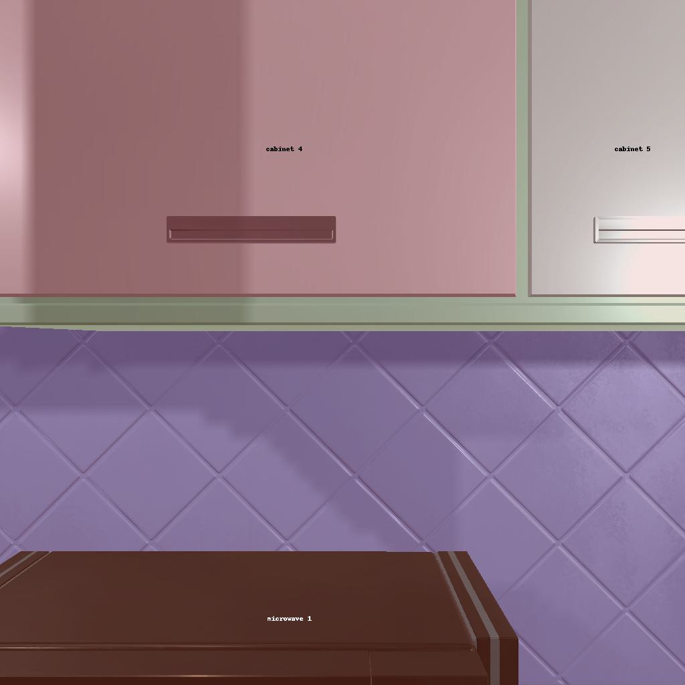
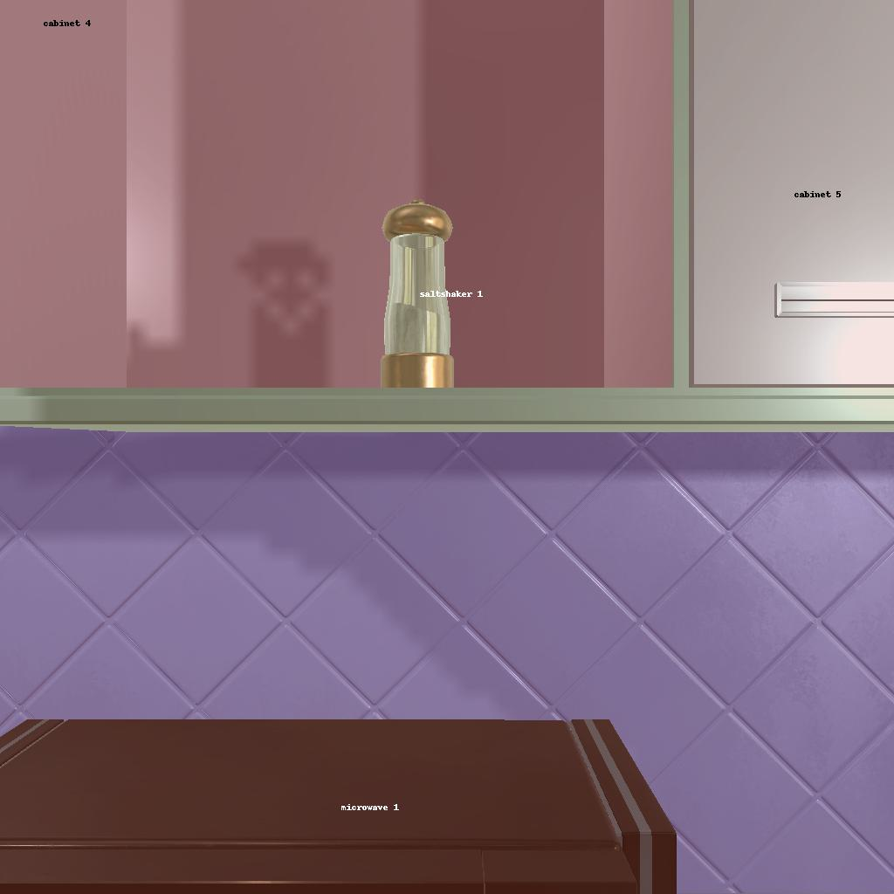

---------------------------------------------------------task: 21---------------------------------------------------------
--------------------------------------------------------------------------------------------------------------------------------------------------------------------
--------------------------------------------------------------------------------------------------------------------------------------------------------------------
Step:--------------------------------------------------------------------------8-------------------------------------------------------------------------------
----------------------------------------
VLM Prompt:
Image1:
Image2:
Image3:
**Instruction**
1. Analyze the provided image to identify all visible household objects, focusing on those relevant to the task description "heat some cup and put it in countertop."
2. Use the analysis of the image and the task hint "The agent must find an object of the desired type, pick it up, go to a microwave, heat the object with the microwave, then find the correct location to place it, and put it down there. The agent does not need to use the microwave button or open the microwave to heat the object, and the agent just needs to do action that is "heat the object with the microwave"." to answer the question: what is the most reasonable action in the choices for the task description "heat some cup and put it in countertop"?
4. Decide and write the answer using the template: The answer is: (i): , where i is the real number. If there is no desired object in the image, search every place based on **Initial Observation** to find the object. And if no one is exactly correct, choose a similar answer.
**Initial Observation**
You are in the middle of a room. Looking quickly around you, you can see cabinet (1-6), microwave (1), countertop (1-2), coffeemachine (1), toaster (1), sink (1), sinkbasin (1), fridge (1)
**Answer Choices**
(1): go to cabinet 1
(2): go to cabinet 2
(3): go to cabinet 3
(4): go to microwave 1
(5): go to cabinet 5
(6): go to countertop 1
(7): go to coffeemachine 1
(8): go to toaster 1
(9): go to countertop 2
(10): go to sink 1
(11): go to sinkbasin 1
(12): go to fridge 1
(13): open cabinet 6
(14): close cabinet 6
(15): examine cabinet 6
**Answer**
Let's think step by step by following the instructions.
----------------------------------------
----------------------------------------
Original Response:
First, we need to identify the objects relevant to the task "heat some cup and put it in countertop." From the initial observation, we know there are cabinets, a microwave, and countertops present.
In Image 1, we see cabinet 4 and cabinet 5, and a microwave on the countertop. No cups are visible.
In Image 2, we see the same cabinets and microwave with a saltshaker on the countertop, but still no cups.
In Image 3, we see cabinets 2 and 3 open with a plate and bowl visible, but no cups.
Since we need to find a cup to heat, the most logical step would be to search the cabinets that we have not seen inside yet. Cabinet 6 is partially open, which suggests it may contain the desired object.
Therefore, the most reasonable action is to further explore cabinet 6 for the cup. Since it is already partially open, the next step would be to examine the contents of the cabinet.
The answer is: (15): examine cabinet 6.
----------------------------------------
----------------------------------------
>>> Refine Original VLM Response and Get Pure Action: examine cabinet 6
----------------------------------------
-----------------------------------------------------------------
Running time: 9.875668287277222 seconds
Total Money: 13.431210000000004
-----------------------------------------------------------------
-----------------------------------------------------------------
Text Observation:On the cabinet 6, you see a bowl 1, and a plate 1.
-----------------------------------------------------------------
UNSUCCEED